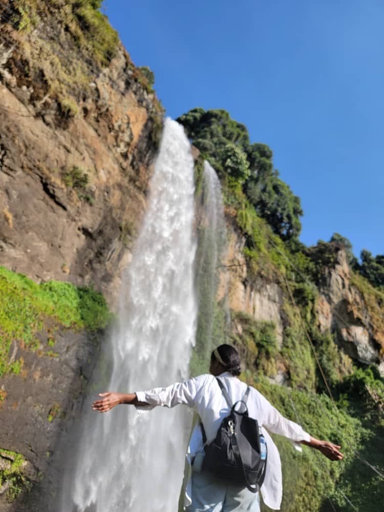
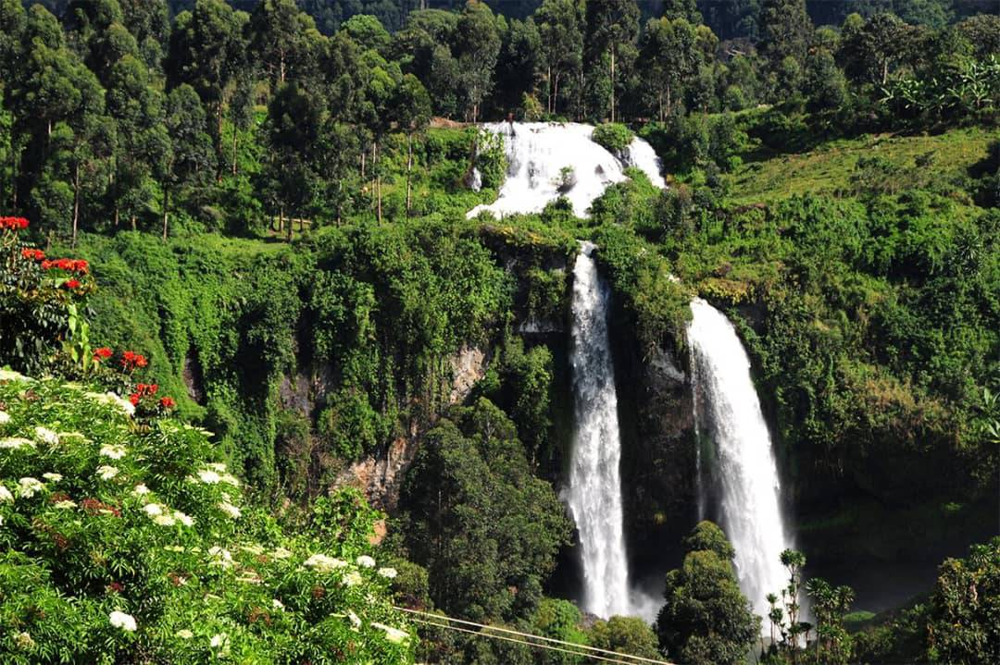
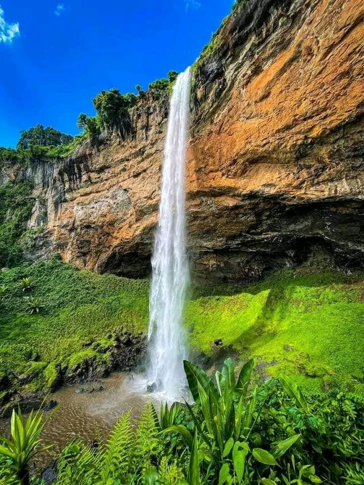
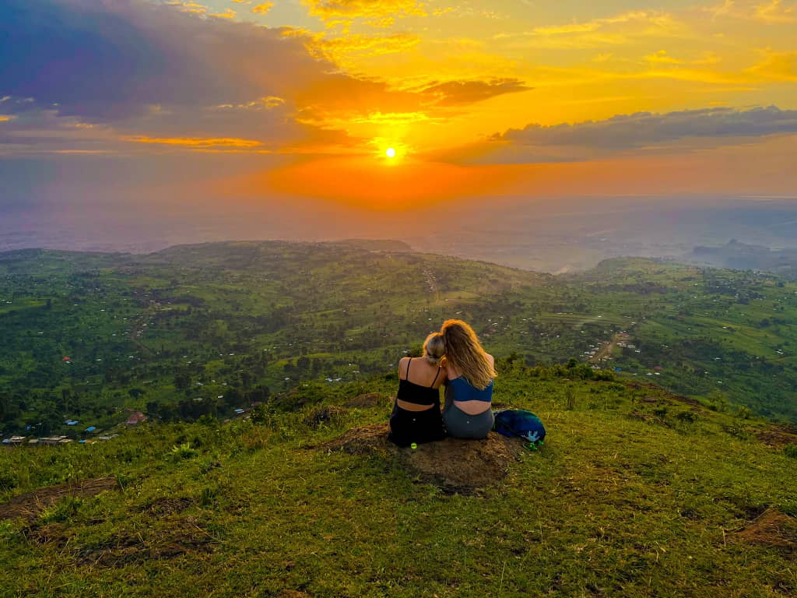
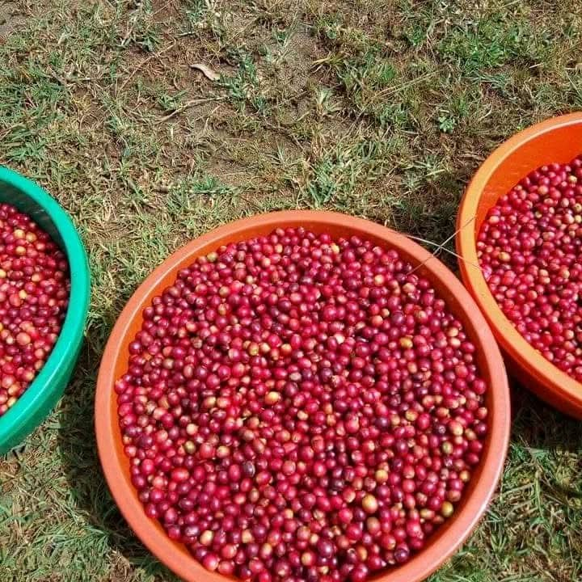
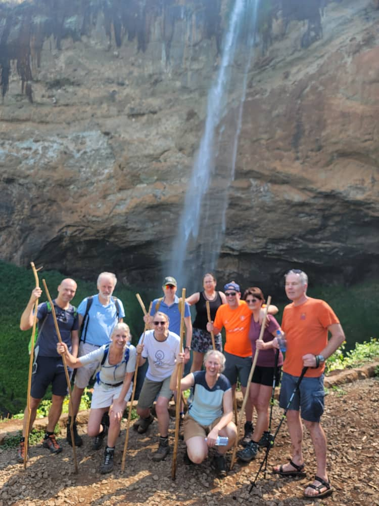

Discover the Legacy of Sipi Falls
Our Story: Legends and History
On Mount Elgon’s emerald slopes, Sipi Falls was born—three wild sisters cascading like poetry, their waters whispering tales of ancient wonder. The name “Sipi” honors a fever-healing herb cherished by the Sabiny people, a name British explorers etched into maps, unable to capture its magic.
Here, moments come alive—climbing cliffs with your heart racing, sipping coffee warmed by the earth, or standing before the falls, feeling timeless. Sipi is where legends are felt, not just told, inviting you to join its story.
Sipi Falls is not just a destination; it's a journey into the heart of nature and culture. Join us at Sipi Falls, where every drop of water carries a story, and every visit becomes part of our living legend.
Mission
To share Sipi Falls’ natural beauty and cultural richness with the world, offering authentic experiences while supporting the Sabiny community through sustainable tourism.
We partner with local guides and artisans to create eco-friendly adventures that uplift the community and preserve the environment.
Vision
To be East Africa’s leading eco-friendly adventure hub, preserving Mount Elgon’s wonders for future generations while empowering our community.
We aim to inspire global travelers with sustainable practices, showcasing Sipi’s beauty while fostering economic growth for locals.
Unique Facts: The Triple Falls

Upper Waterfall: Chebokoch (85m)
Chebokoch’s underground streams form a serene pool amid lush plantations, perfect for a guided adventure.

Middle Waterfall: Chepkui (65m)
Chepkui’s volcanic caves, with petrified wood, frame a double-sided waterfall offering stunning views.

Lower Waterfall: Kaptogolo (100m)
Kaptogolo’s chambers, once a herders’ refuge, reveal ancient rock paintings and mineral deposits.
Community & Sustainability

Our tours empower the Sabiny community with jobs and local crafts while promoting sustainability through solar power, waste reduction, and coffee tree planting.

0
Sabiny Jobs Created

0
Coffee Trees Planted

0
Sustainable Tours Led
Meet Our Tour Guides

Sisco
15 years guiding hikers and abseilers, Sisco brings humor and deep local knowledge to every adventure.
Josh
Founder since 2018, Josh excels in cultural tours and photography, passionate about community growth.
Risper
Risper shines in sunset tours and coffee experiences, bringing enthusiasm and storytelling to every trip.
Watch Our Story
Experience the magic of Sipi Falls through this captivating video.
Ready to Explore Sipi Falls?
Join the Sabiny legacy—book your adventure with our expert guides today!